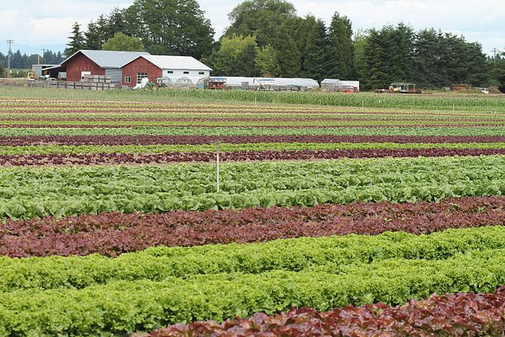
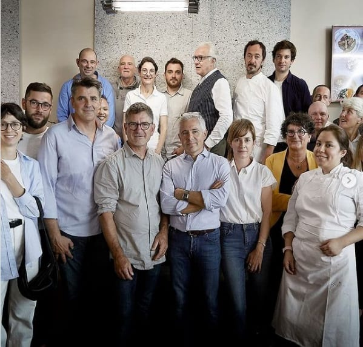

Our Story
Verdant Kitchen was born from a passion for plant-based cuisine and environmental responsibility. Our founders believed in the power of food to make a difference — not just for personal health, but for the planet. We continually strive to create an accountable, compassionate dining experience.
Farm-Fresh Beginnings
From day one, we’ve worked with local farms to bring you the freshest seasonal ingredients. Our dishes are crafted to highlight the natural flavors of vegetables, grains, and legumes, ensuring every plate bursts with vitality and taste.
Our Core Values
- Sustainability: Committed to eco-friendly practices in every aspect of our business.
- Quality: We source the freshest, locally grown ingredients for our kitchen.
- Community: Actively supporting local farmers and engaging with our community.
What Our Customers Say
- Local Critic"A truly unique dining experience – every bite bursts with fresh flavor and passion."
- Satisfied Customer"Not only is the food incredible, but Verdant Kitchen is pioneering sustainable dining in our community."
Meet the Team
Our chefs, farmers, and sustainability experts are all united by a love for good food and green living. Come visit us or learn more about our mission!
